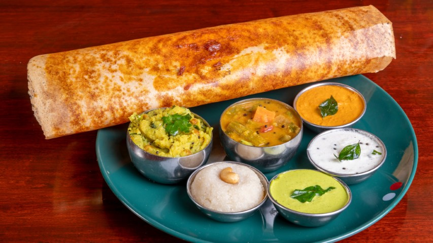
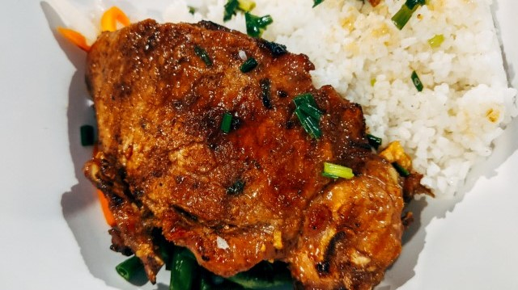
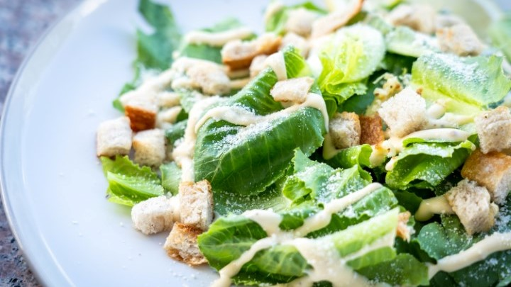
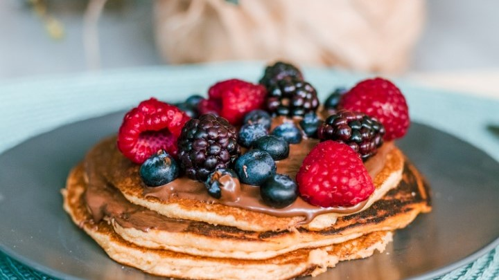
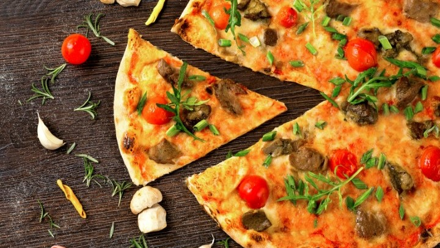
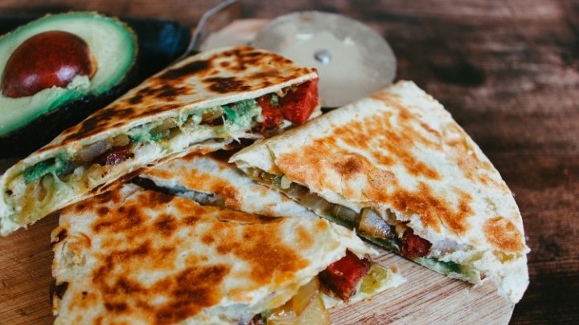

Add a recipe to the list
Select or Search a recipe from the list.

Dosa
A dosa is a thin, spicy, crispy crêpe-like food made from fermented rice, and it is very popular in restaurants in South India.
Prep Time: 20 hours
Cook Time:
5 minutes

Samosa
A samosa is a fried South Asian pastry with a savory filling, including ingredients such as spiced potatoes, onions, and peas. It may take different forms, including triangular, cone, or half-moon shapes, depending on the region.
Cook Time: 1 hour

Brown Rice with Ground Turkey
Brown rice with ground turkey is a californian dish made especially near thanksgiving
Cook Time: 30 minutes

Caesar Salad
The Caesar salad is a traditional salad served in American restaurants, often prepared table side. It is referred to by some as the "king" of salads. Its origin is largely credited to Italian immigrant Caesar Cardini.
Cook Time: 5 minutes

Pancake
Pancakes are a type of flatbread prepared from a batter that is baked on a hot griddle or frying pan. They exist in several variations in many different local cuisines.
Cook Time: 15 minutes

Pizza
Pizza generally consists of a crust covered in sauce, layered with toppings and finally with a layer of cheese on top.
Cook Time: 1 hour
Poutine
Poutine is common dish throughout the Quebec, Ontario, and Atlantic regions of Canada, made of French fries, cheese curds, and gravy.
Cook Time: 20 minutes

Quesadilla
Similar to a sandwich, the amount of ingredients for a quesadilla depends on how many you are serving and how big you want to make a particular quesadilla.
Cook Time: 30 minutes